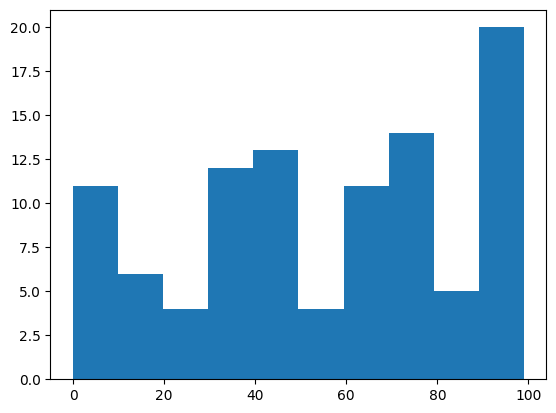
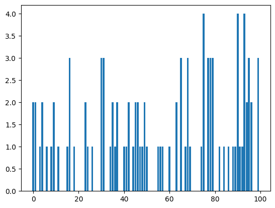
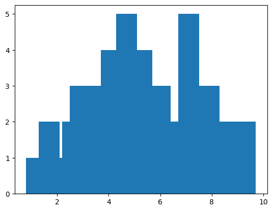
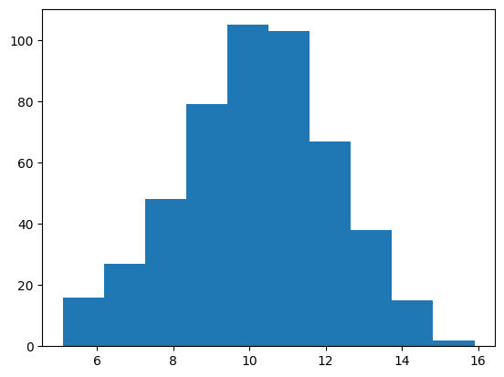
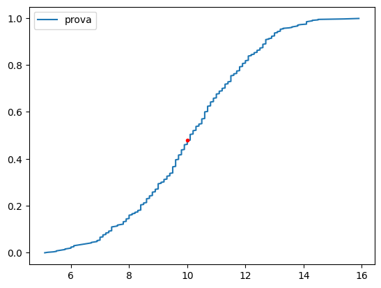
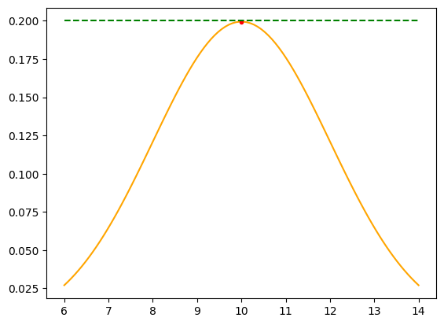

import numpy as np
import matplotlib.pyplot as plt01-02: Introduzione
Generazione di valori casuali con numpy
gen=np.random.randint(0,100, size=100)
plt.hist(gen)
plt.show()
vals, freqs = np.unique(gen, return_counts=True)
plt.bar(vals,freqs)
plt.show()
f_gen = np.random.uniform(0,1, size=100)
f_genarray([1.52041499e-01, 6.30839436e-01, 5.21142994e-01, 3.75766743e-02,
1.90704818e-01, 3.53463772e-01, 6.11742370e-01, 9.64105044e-01,
4.74260010e-01, 8.95519640e-01, 4.96846248e-01, 4.33177875e-01,
1.99619133e-01, 9.47677944e-01, 4.18110121e-01, 3.13258267e-01,
5.33809036e-01, 8.59851163e-01, 3.08351785e-01, 5.26905725e-01,
3.66313509e-01, 7.55822360e-01, 4.91134848e-01, 5.32147528e-01,
1.80006287e-01, 5.23692600e-01, 4.81787764e-01, 9.69285912e-01,
9.48764984e-01, 2.02829210e-01, 4.28632372e-02, 3.95234790e-01,
7.90260561e-01, 7.27555605e-01, 6.60772549e-02, 1.46392366e-01,
1.16627891e-01, 5.53497779e-01, 7.19912320e-01, 4.78135812e-04,
7.59272001e-01, 6.14927985e-02, 6.65614446e-01, 6.24738656e-01,
7.44943917e-02, 9.90929470e-01, 5.83544027e-01, 7.72674795e-01,
2.99580385e-01, 3.25610762e-01, 1.37593906e-01, 2.81585675e-01,
5.08403543e-01, 7.80397136e-01, 4.36556748e-01, 8.13315364e-01,
8.08486157e-01, 6.91533666e-01, 5.11304412e-01, 7.34973605e-01,
2.53875507e-01, 7.72117122e-01, 2.84611460e-01, 1.73545515e-01,
4.18820514e-01, 3.66116311e-01, 3.94067614e-01, 4.40649868e-01,
3.74612927e-02, 5.26417613e-01, 2.81059280e-01, 7.86509150e-01,
2.63950309e-01, 6.71883489e-02, 4.92052219e-02, 6.23452740e-01,
6.74960849e-01, 9.13132543e-01, 5.92615914e-01, 1.92269643e-01,
6.01897800e-01, 8.45466129e-01, 9.58903528e-02, 5.18269881e-01,
6.42104800e-01, 8.34977741e-01, 5.92467957e-02, 1.48619077e-01,
6.77815939e-01, 9.36100636e-01, 2.89635814e-02, 2.27803891e-01,
9.89414240e-01, 9.05032133e-01, 3.49191121e-01, 9.62800008e-02,
3.24079944e-01, 9.51528519e-01, 1.83452855e-01, 2.02846415e-01])import random
min_val = 1
max_val = 10
values = [random.randint(min_val, max_val) for _ in range(100)]
frequencies = [values.count(i) for i in range(min_val, max_val+1)]
values = np.array(values)
frequencies = np.array(frequencies)
unique_vals = np.unique(values)
print(f"vals: {values}")
print(f"freqs: {frequencies}")
print(f"uniques: {unique_vals}")
unique_vals, frequencies = np.unique(values, return_counts=True)
print(f"freqs: {frequencies}")
print(f"uniques: {unique_vals}")vals: [ 7 10 7 6 5 4 5 5 10 10 10 3 3 4 3 9 1 5 4 2 3 3 3 1
10 4 1 5 6 4 9 10 7 4 2 3 2 3 10 2 8 5 8 2 6 2 5 1
7 5 10 3 3 2 7 9 5 2 2 2 4 6 9 1 5 4 10 2 1 2 9 6
3 2 2 10 5 9 3 5 3 3 2 7 9 10 9 4 5 7 1 7 6 3 9 6
4 4 9 10]
freqs: [ 7 15 15 11 13 7 8 2 10 12]
uniques: [ 1 2 3 4 5 6 7 8 9 10]
freqs: [ 7 15 15 11 13 7 8 2 10 12]
uniques: [ 1 2 3 4 5 6 7 8 9 10]Generiamo 100 valori da una distribuzione normale con media = 5 e std = 2, arrotondati a 1 decimale. Calcoliamo valori unici e frequenze.
n=100
mean=5
std=1
vals = np.random.normal(loc=mean, scale=2, size=n)
vals = np.round(vals,1)
unqs, freqs = np.unique(vals, return_counts=True)
plt.bar(unqs, freqs)
plt.show()
n_samples = 500
gen = np.random.normal(loc=10, scale=2, size=n_samples)
gen = np.round(gen, 1).astype(float)
plt.hist(gen)
plt.show()
Funzioni CDF e ECDF
x = [i/n_samples for i in range(n_samples)] # una sorta di linspace tra 0 e 1 di dimensione n_samples
y_sorted = sorted(gen)
#cdf(i) = p(X <= i)
def cdf(i):
count = 0
for v in y_sorted:
if v <= i:
count +=1
p = count/n_samples
return p
plt.plot(y_sorted,x, label="prova")
plt.plot(10, cdf(10), "r.")
plt.legend()
plt.show()
print(cdf(10))
0.48from scipy.stats import norm
x = np.linspace(-2,2, 100)
y = norm.cdf(x)
plt.plot(y, x)
plt.show()
from scipy.stats import norm
x = np.linspace(6, 14, 100)
y = norm.pdf(x, loc=10, scale=2)
plt.plot(x, y, "orange")
plt.plot(10, norm.pdf(10, loc=10, scale=2), "r.")
plt.plot(x, [0.2 for _ in range(100)], "g--")
plt.show()